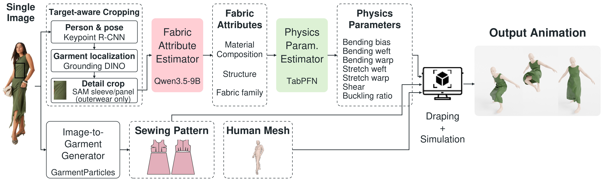
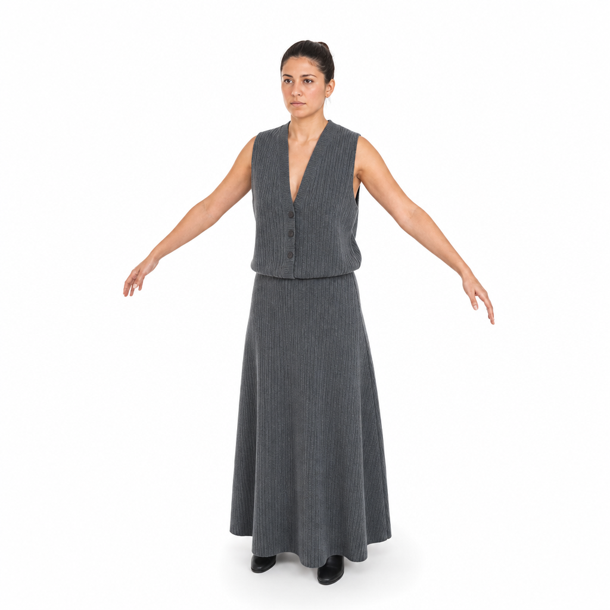
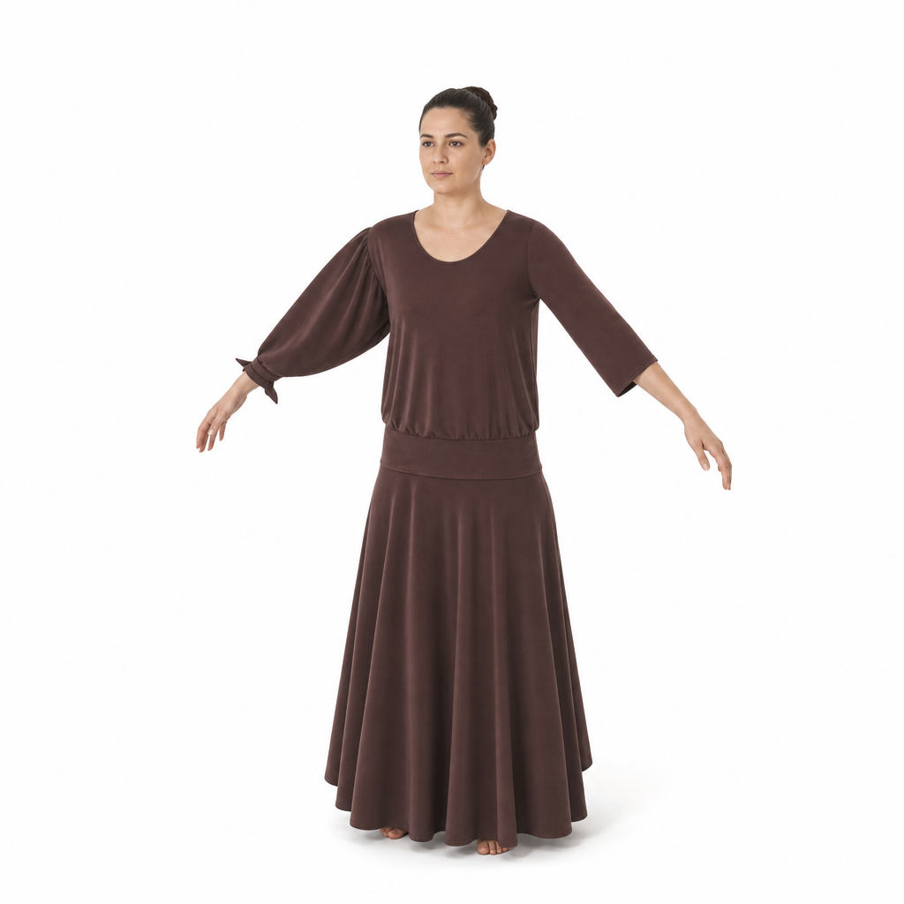
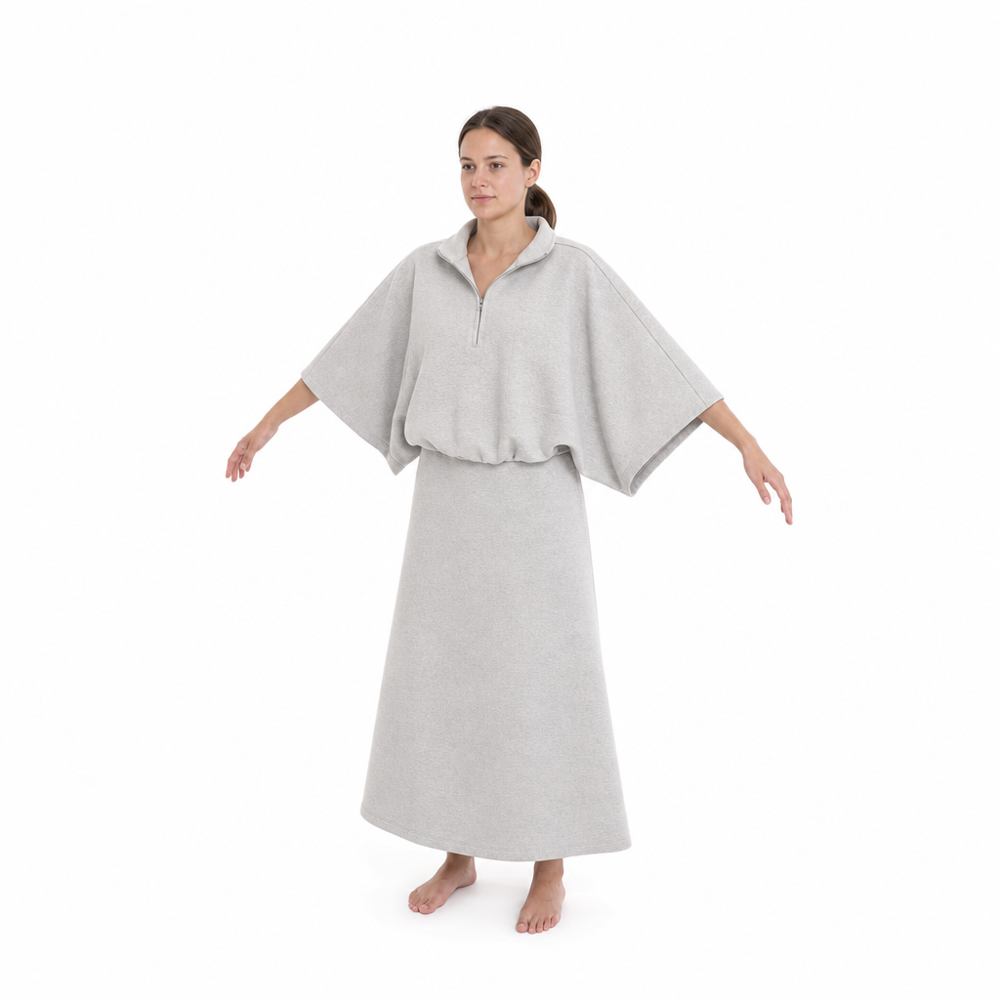
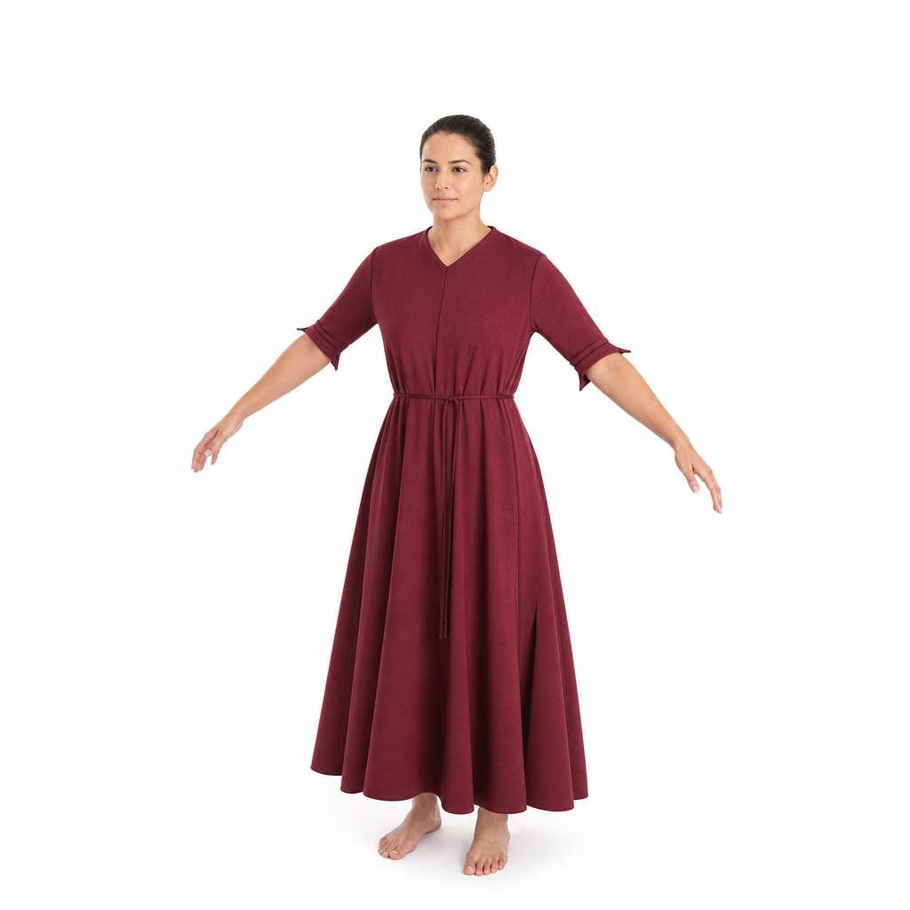
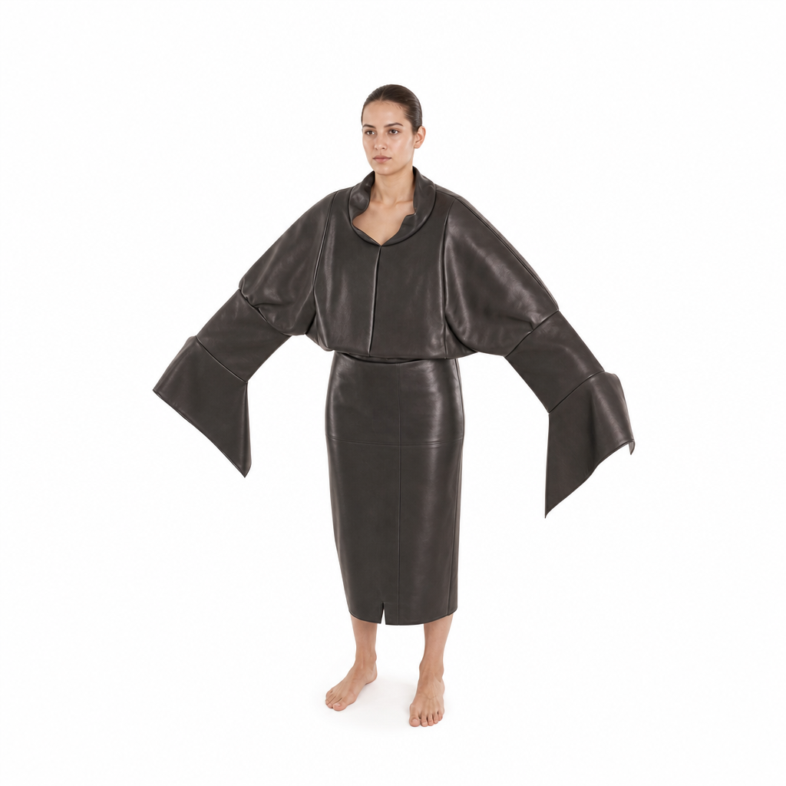
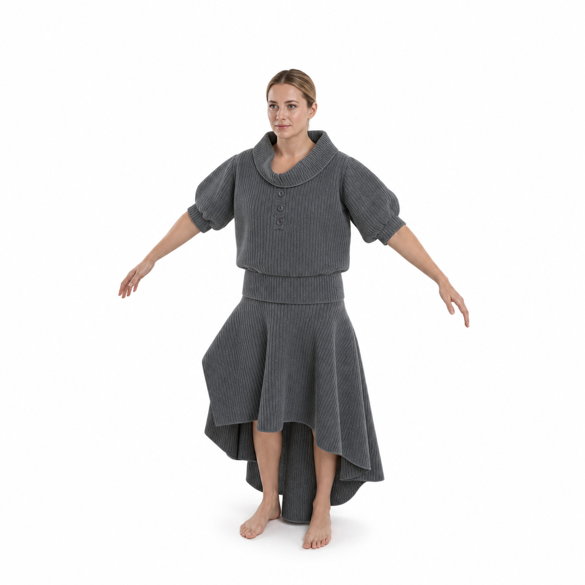
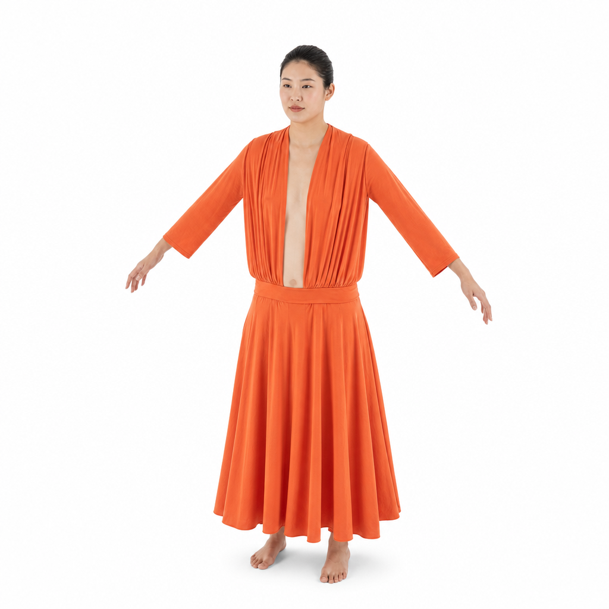

Abstract
Recovering a simulation-ready garment from one image requires both its sewing-pattern geometry and the physical parameters governing its motion. Existing methods either rely on controlled multi-view capture and iterative inverse simulation or recover geometry without usable fabric physics. We introduce Image2Garment, a feed-forward framework with two complementary branches. The geometry branch fine-tunes an image-conditioned GarmentParticles model on geometry-preserving photorealistic adaptations of synthetic renders. The physics branch uses Qwen3.5-9B to infer dominant material, structure, and fabric family from a target-aware crop, then maps this semantic bottleneck to simulator parameters with TabPFN and measured FabriPhys data.
We additionally introduce FabriCue for visual fabric-attribute learning, FabriPhys for attribute-to-physics estimation, and SMS for controlled dynamic evaluation. Geometry adaptation reduces 3D Chamfer error by 41.9%; our attribute model reaches 39.83% joint exact match; and the complete system reduces average simulation Chamfer distance from 67.39 and 117.40 for augmented single-image baselines to 34.59. Together, these components enable physically grounded garment reconstruction without paired image–physics data or per-garment inverse optimization.
Method

Two complementary branches process a single image. The geometry branch reconstructs a sewing pattern with an adapted image-conditioned GarmentParticles [3] model, fine-tuned on geometry-preserving photorealistic adaptations of synthetic renders. In parallel, the physics branch extracts a target-aware garment crop, predicts the dominant material, structure, and fabric family with a fine-tuned Qwen3.5-9B, and maps these attributes to simulator physics parameters with TabPFN trained on measured FabriPhys data. The two outputs are combined only for the final garment simulation.
Baseline Comparisons (Simulations)





AIpparel* and ChatGarment* predict geometry only; they are simulated with the most-common-material physics parameters. Image2Garment uses our estimated geometry and estimated physics parameters. Ground Truth is the ground-truth geometry simulated with the ground-truth physics parameters.
Physics Parameter Ablation

